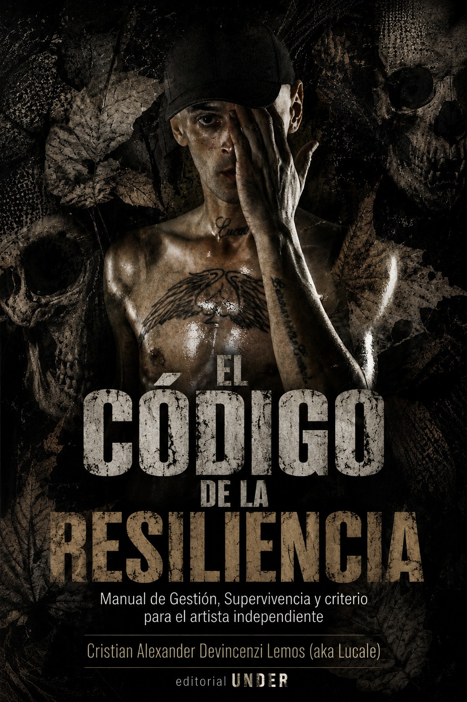

Catálogo Actual


UNDER Ediciones es una editorial independiente nacida en La Matanza, corazón del Conurbano Oeste bonaerense. Surge de la convicción de que las experiencias, saberes, historias y producciones culturales que nacen en los barrios merecen ser documentadas y preservadas.
Nuestro catálogo está dedicado a activistas, músicos, gestores culturales e investigadores del hip-hop y las músicas urbanas. Creemos que estos movimientos han generado un patrimonio cultural invaluable que debe trascender los escenarios para encontrar un lugar en los libros.

Accedé a nuestras investigaciones y textos teóricos en Academia.edu.
Ver Repositorio¿Tenés un proyecto que encaje con nuestra línea editorial? Queremos leerte.
Enviar Manuscrito